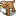
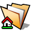
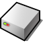
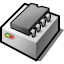
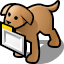
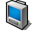
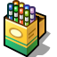
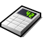
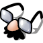

Liquid Glass
The current Astra, made of glass - and still Kosmos. Every chrome surface bends the light at its rim: a refraction map traced by Snell's law through a curved bevel, as in Zaki Sheriff's Liquid-Glass (MIT), computed here per surface. Kosmos's cues sit on it: the amber plate on the window in front, the star, the glints, round glass beads, a warm rim on the focused window and an amber-and-indigo colour split. Drag a window by its header, click one to bring it forward, open quick settings from the tray. Windows show switches between what the processor would draw - a window's glass shows the wallpaper behind it, made once a wallpaper - and real glass over the windows behind, which waits for the GPU. The text is docs/astra.md, Liquid Glass, a look of its own; the other looks are in astra.html. Nothing here is built.

FilesLiquid Glass, a look of its own
The current Astra, made of glass. Every surface that is chrome bends the light at its rim; what a person reads or watches does not - this page is content, and stays opaque.
The rim is a bevel a few pixels wide. A ray meets a quarter-circle surface, Snell's law at n = 1.5 bends it, and where it lands a glass-depth below is the pixel the rim shows. The table is made once per radius and bevel and kept.
Windows show the wallpaper's blur behind them, made once a wallpaper. Real glass over other windows waits for the GPU.

Home
Kosmos
Stick




The edge, and the map behind it
What makes it liquid rather than frosted. The map on the left is the one this page computed for the window in front - red is how far a pixel looks sideways, green how far up or down, grey is none - and it is all rim: the inside of a surface is untouched.
The front window's refraction map, as computed
Here a map is made per size, as the repo does. In Kosmos it would be smaller: the rim is the same all along each straight edge, so the table is one edge profile and one corner quadrant per radius and bevel - 2.7 KB for 18 and 12 (lens.c).
A ray through the bevel
A ray straight down meets the bevel's slope and bends toward the inside, so the pixel at the rim shows the backdrop from a little further in: the picture seems to pour over the edge. The specular is the same slope against a light at the upper left. Warm channels are bent a little more than cool ones, which is the amber-and-indigo fringe.
Kosmos's cues, and the glass's
The glass is what makes it feel like Liquid Glass; the cues are what make it Kosmos. Untick Kosmos cues above to see the glass alone - and how much it then reads as somebody else's.
| Cue | Whose | Here |
|---|---|---|
| Refraction at the rim, frost, tint, specular edge | the glass's | as the repo and iOS 26 |
| The amber plate on the window in front | Kosmos's | amber glass, slanted and eased right edge, with its own specular |
| The four-point star | Kosmos's | the Kosmos button on the strip and in the dock |
| The glint under a running application | Kosmos's | a star, amber for the one in front, where iOS has a dot |
| Round window buttons, today's colours | Kosmos's | glass beads; grey glass on windows behind |
| A warm rim on the window in front | new | focus shown by the light in the glass |
| The star specular | new | the front window's highlight ends in a star at its top-left corner |
| Amber and indigo, not a rainbow | new | the colour split at the rim fringes in Kosmos's two colours |
What each part costs
The M700 at 1920x1080, from 3.4 ns a composed pixel (measured); the rest are estimates. A frame is 16.7 ms.
| Part | When it is paid | M700 |
|---|---|---|
| The wallpaper's blurred copy | once, when the wallpaper changes | 8-10 ms once; 8.3 MB |
| A glass window's ground over it (windows show the wallpaper) | only where damage is redrawn | +1 ms a whole 1000x700 window; 0 when still |
| The rim: refraction, specular, split | the rim's band, where redrawn | 0.25 ms a large window; 0.1 the dock |
| The lens table | once per radius and bevel | ~0.05 ms; 2.7 KB |
| Live frosted glass: dock / menu / quick settings | when what is under it changes | 0.5 / 0.3 / 0.6 ms |
| Live frosted glass: a 1000x700 window / maximised | when what is under it changes | 2.3 / 6.2 ms |
| Live clear glass: dock / window | when what is under it changes | 0.1 / 1 ms |
| On the GPU (7d, not built) | every frame, on the render engine | 0 on the processor |